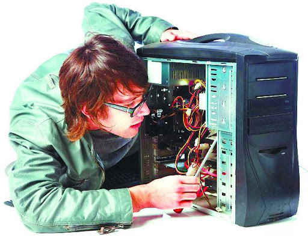
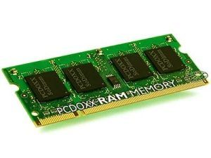
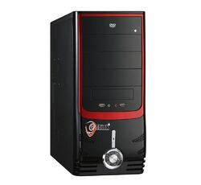

elementos de un sistema de informacion computacional
equipocomputacional: hardware necesario para que el sistema de informacion
funcion, integrado por computadoras y equipo periferico conectado a ellas

recurso humano: son las personas que interactuan con el sistema de informacion,
suministran datos o utilizan el sistema para generar datos.
fuente: son los datos e informacion que se introducen en el sistema, es decir, son
las entradas requeridas para que el sistema informatico funcione.
programas: software ejecutado por la computadora, el cual procesa la informacion
de entrada para generar los resultados esperados.

telecomunicaciones: abarca el software y hardware que permite la transmision
en forma electronica de texto e imagenes, entre otros.

politicas y reglas de operacion: aplicadas a los procedimientos y mecanismos
para hacer que una aplicacion de computadoras trabaje de acuerdo con estas o
regir la partefuncional del proceso administrativo de la empresa.
pagina principal
atras